format long
clear
type choleraData.m
totalPop = 10000000;
high= 0;
mid = 0;
low = 10000000;
disp('**0 high, 0 mid, 1 low **')
data(1,:,:,:) = choleraData(high,mid,low);
clear
clf
totalPop = 10000000;
high= totalPop*.1;
mid = totalPop*.3;
low = totalPop*.6;
disp('**.10 high, .30 mid, .60 low **')
data(2,:,:,:) = choleraData(high,mid,low);
clear
clf
totalPop = 10000000;
high= totalPop*.02;
mid = totalPop*.05;
low = totalPop*.93;
disp('**.02 high, .05 mid, .93 low **')
data(2,:,:,:) = choleraData(high,mid,low);
clear
clf
totalPop = 10000000;
high= totalPop*.01;
mid = totalPop*.025;
low = totalPop*.965;
disp('**.01 high, .025 mid, .965 low **')
data(2,:,:,:) = choleraData(high,mid,low);
clear
clf
totalPop = 10000000;
high= 10000;
mid = 100000;
low = 9890000;
disp('**.001 high, .01 mid, .998 low **')
data(3,:,:,:) = choleraData(high,mid,low);
function data=choleraData(high, mid, low)
time = 1000; %time in days
timex = [0:1:time]; %time array
Narr= [high;mid;low]; %population
initS = [Narr(1)*.999;Narr(2)*.999;Narr(3)*.999]; %initial susecptible pop
initI = [Narr(1)*.001;Narr(2)*.001;Narr(3)*.001]; %initial infected pop
initR = [Narr(1)*0;Narr(2)*0;Narr(3)*0]; %initial recovered pop
initB = [0;0;0]; %initial bateria in water
N = sum(Narr) ;
Lambda = [.0000638356;.0000638356;.0000638356]; %birth rates
mu= [.0000210958;.0000210958;.0000210958]; %mortality rate
beta = 10^-8*[1 1 1;
1 1 1; %human to human transmission rate
1 1 1];
epsilon = [.0002739726;.0002739726;.0002739726]; %loss of immunity rate
lambda = 10^-8* [1;1;1]; %water to human transmission rate
gamma =[.2;.2;.2]; %recovery rate
alpha =[.0005;.0005;.0005]; %disease induce mortality
xi = [7;7;7]; %shedding rate
delta =[.33;.33;.33]; %baterial death rate
flist = @(Y) [Lambda(1)*Narr(1)-mu(1)*Y(1)-beta(1,1)*Y(1)*Y(2)-beta(1,2)*Y(1)*Y(6)-lambda(1)*Y(1)*Y(4)+epsilon(1)*Y(3),...
beta(1,1)*Y(1)*Y(2)+beta(1,2)*Y(1)*Y(6)+lambda(1)*Y(1)*Y(4)-(gamma(1)+mu(1)+alpha(1))*Y(2),...
gamma(1)*Y(2)-mu(1)*Y(3)-epsilon(1)*Y(3),...
xi(1)*Y(2)-delta(1)*Y(4),...
Lambda(2)*Narr(2)-mu(2)*Y(5)-beta(2,2)*Y(5)*Y(6)-beta(2,1)*Y(5)*Y(2)-beta(2,3)*Y(5)*Y(10)-lambda(2)*Y(5)*Y(8)+epsilon(2)*Y(7),...
beta(2,2)*Y(5)*Y(6)+beta(2,1)*Y(5)*Y(2)+beta(2,3)*Y(5)*Y(10)+lambda(2)*Y(5)*Y(8)-(gamma(2)+mu(2)+alpha(2))*Y(6),... %6 Im
gamma(2)*Y(6)-mu(2)*Y(7)-epsilon(2)*Y(7),...
xi(2)*Y(6)-delta(2)*Y(8),...
Lambda(3)*Narr(3)-mu(3)*Y(9)-beta(3,3)*Y(9)*Y(10)-beta(3,2)*Y(9)*Y(6)-lambda(3)*Y(9)*Y(12)+epsilon(3)*Y(11),...
beta(3,3)*Y(9)*Y(10)+beta(3,2)*Y(9)*Y(6)+lambda(3)*Y(9)*Y(12)-(gamma(3)+mu(3)+alpha(3))*Y(10),...
gamma(3)*Y(10)-mu(3)*Y(11)-epsilon(3)*Y(11),...
xi(3)*Y(10)-delta(3)*Y(12)];
init = [initS(1) initI(1) initR(1) initB(1) initS(2) initI(2) initR(2) initB(2) initS(3) initI(3) initR(3) initB(3)];
h=1;
steps=time;
freq=1;
out = RKStage5( flist ,init, 1, time, 1);
totS = out(:,1)+out(:,5)+out(:,9);
totI = out(:,2)+out(:,6)+out(:,10);
totR = out(:,3)+out(:,7)+out(:,11);
totB = out(:,4)+out(:,8)+out(:,12);
totals = [totS totI totR];
endTotal = totals(1000,:, :, :)
totals = [totS totI totR, totB];
hold on
a1 = plot(timex,totS,'m');
M1 = 'susceptible pop';
a2 = plot(timex,totI, 'r');
M2 = 'infected pop ';
a3 = plot(timex,totR , 'b');
M3 = 'recovered pop ';
xlabel('Time in Days'),ylabel('Total People'), title('SIWR GDP STRUCTURED MODEL total')
legend([a1; a2; a3], [M1; M2; M3]);
snapnow
hold off
clf
hold on
a1 = plot(timex,out(:,1),'m');
M1 = 'susceptible pop';
a2 = plot(timex,out(:,2), 'r');
M2 = 'infected pop ';
a3 = plot(timex,out(:,3) , 'b');
M3 = 'recovered pop ';
xlabel('Time in Days'),ylabel('Total People'), title('SIWR GDP STRUCTURED MODEL high')
legend([a1; a2; a3], [M1; M2; M3]);
snapnow
hold off
clf
hold on
a1 = plot(timex,out(:,5),'m');
M1 = 'susceptible pop';
a2 = plot(timex,out(:,6), 'r');
M2 = 'infected pop ';
a3 = plot(timex,out(:,7) , 'b');
M3 = 'recovered pop ';
xlabel('Time in Days'),ylabel('Total People'), title('SIWR GDP STRUCTURED MODEL mid')
legend([a1; a2; a3], [M1; M2; M3]);
snapnow
hold off
clf
hold on
a1 = plot(timex,out(:,9),'m');
M1 = 'susceptible pop';
a2 = plot(timex,out(:,10), 'r');
M2 = 'infected pop ';
a3 = plot(timex,out(:,11) , 'b');
M3 = 'recovered pop ';
xlabel('Time in Days'),ylabel('Total People'), title('SIWR GDP STRUCTURED MODEL low')
legend([a1; a2; a3], [M1; M2; M3]);
snapnow
hold off
clf
hold on
a1 = plot(timex,out(:,4),'m');
M1 = 'bacteria high ';
a2 = plot(timex,out(:,8), 'r');
M2 = 'bateria mid ';
a3 = plot(timex,out(:,12) , 'b');
M3 = 'bateria low ';
xlabel('Time in Days'),ylabel('Total bateria'), title('bateria differences')
legend([a1; a2; a3], [M1; M2; M3]);
snapnow
hold off
peaksinfected = [max(out(:,2)); max(out(:,6)); max(out(:,10))]
peakTotInfected = max(totI)
peaksbacteria = [max(out(:,4)); max(out(:,8)); max(out(:,12))]
peakTotBateria = max(totB)
sumtotals = sum(totals,1)
data = out;
end
**0 high, 0 mid, 1 low **
endTotal =
1.0e+06 *
1.326667674544400 0.002272326656410 9.064729681597328
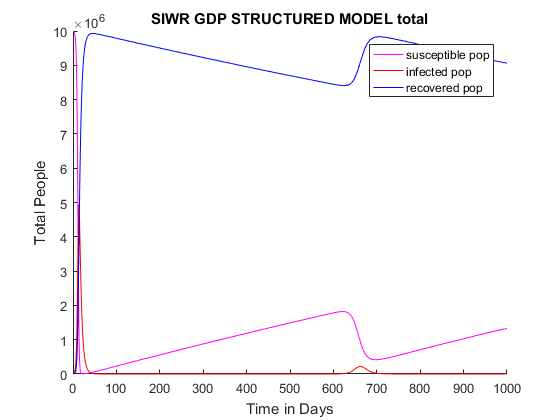 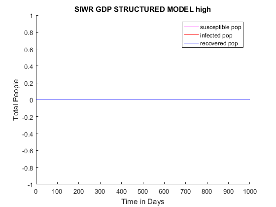 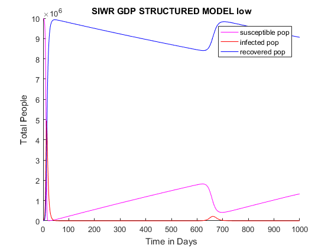
peaksinfected =
1.0e+06 *
0
0
4.944829188698199
peakTotInfected =
4.944829188698199e+06
peaksbacteria =
1.0e+07 *
0
0
8.315093765709698
peakTotBateria =
8.315093765709697e+07
sumtotals =
1.0e+09 *
Columns 1 through 3
1.019623070031396 0.058762190474799 9.118163027024059
Column 4
1.246299325026383
**.10 high, .30 mid, .60 low **
endTotal =
1.0e+06 *
2.496966697020312 0.168646200913033 7.732132224327224
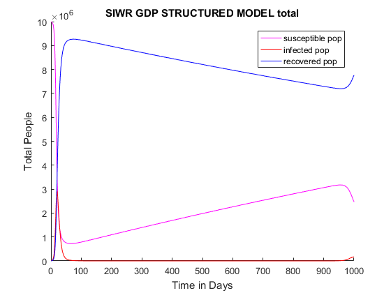 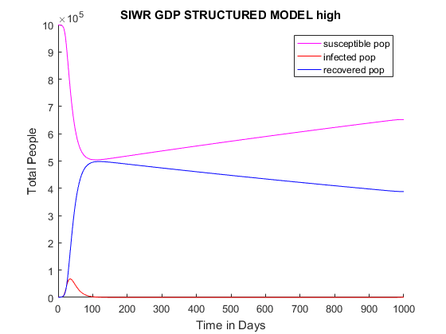 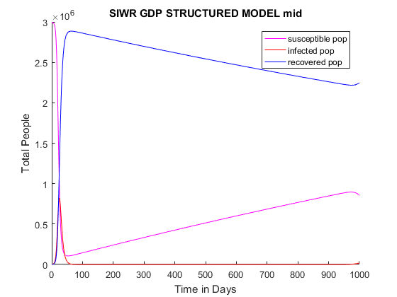 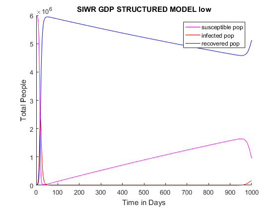 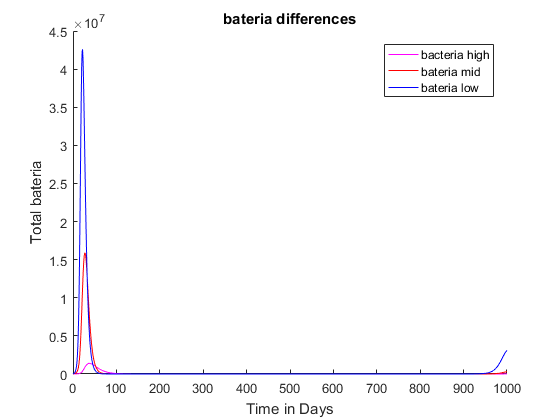
peaksinfected =
1.0e+06 *
0.067917473668894
0.821192822937815
2.359546785383043
peakTotInfected =
2.940456504012959e+06
peaksbacteria =
1.0e+07 *
0.140031440293971
1.589670143204681
4.260611685577143
peakTotBateria =
5.461416758181212e+07
sumtotals =
1.0e+09 *
Columns 1 through 3
2.127537298583299 0.050737245041566 8.021300736349810
Column 4
1.065687633579177
**.02 high, .05 mid, .93 low **
endTotal =
1.0e+06 *
1.630164719643814 0.000092107745728 8.764464751667738
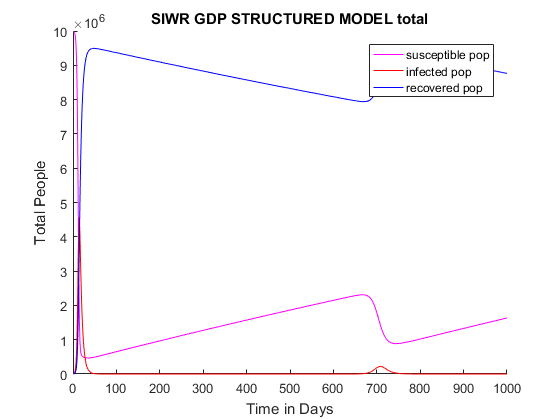 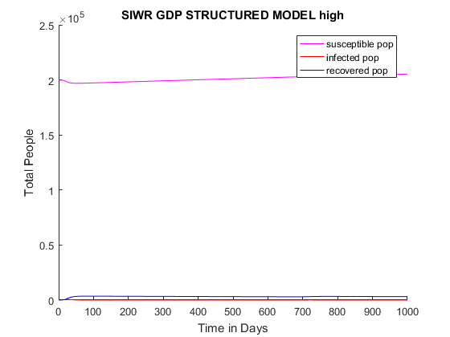 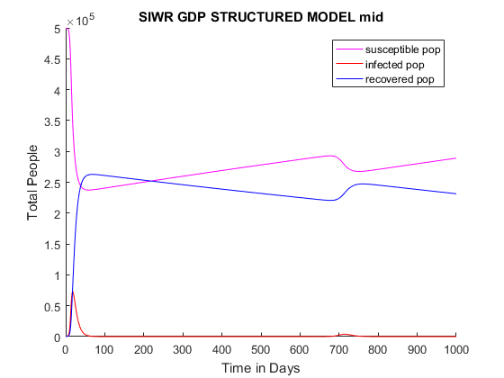 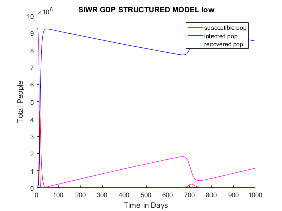 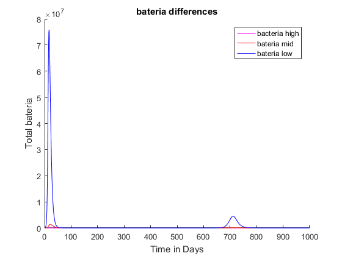
peaksinfected =
1.0e+06 *
0.000667596012186
0.073068530618906
4.502213391036292
peakTotInfected =
4.554858057688616e+06
peaksbacteria =
1.0e+07 *
0.001341331780158
0.138403510917662
7.587883466007529
peakTotBateria =
7.697721717903395e+07
sumtotals =
1.0e+09 *
Columns 1 through 3
1.467902807272126 0.056602369983614 8.673305230886566
Column 4
1.200598803043294
**.01 high, .025 mid, .965 low **
endTotal =
1.0e+06 *
1.495321460086508 0.000368387872720 8.898556937818306
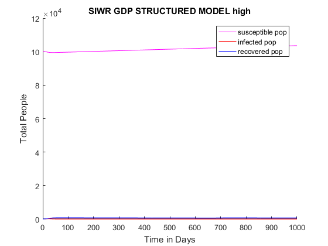 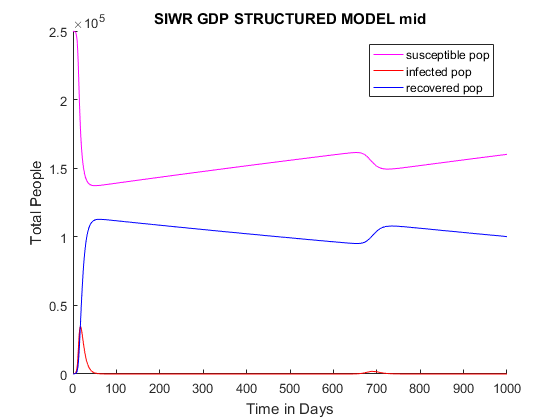 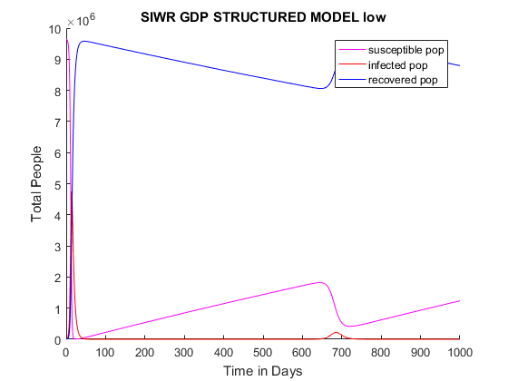 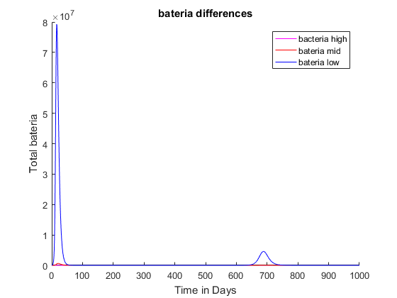
peaksinfected =
1.0e+06 *
0.000146912539753
0.035038961361686
4.750344324113678
peakTotInfected =
4.778113097825803e+06
peaksbacteria =
1.0e+07 *
0.000291460958341
0.065287263840008
7.930701307236657
peakTotBateria =
7.979467809699981e+07
sumtotals =
1.0e+09 *
Columns 1 through 3
1.260265915593240 0.057576729382491 8.879383672099241
Column 4
1.221258368512061
**.001 high, .01 mid, .998 low **
endTotal =
1.0e+06 *
1.376441745935727 0.001248809977151 9.016147632561307
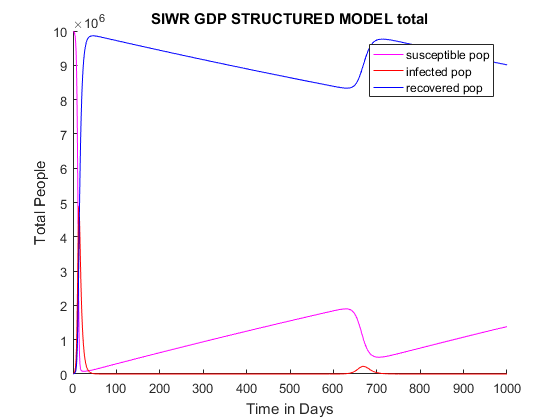 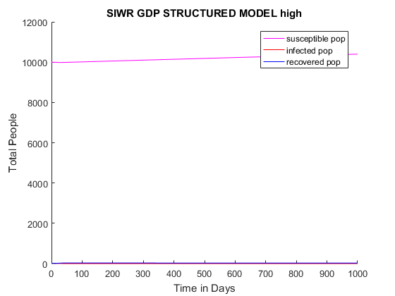 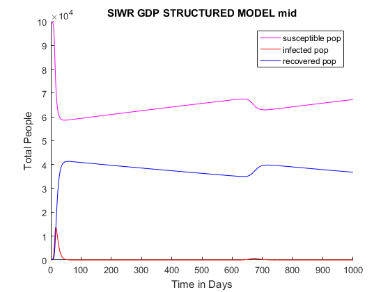 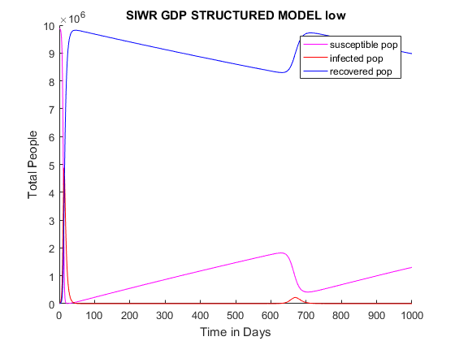
peaksinfected =
1.0e+06 *
0.000010000000000
0.013720499708631
4.889239337894802
peakTotInfected =
4.900715477278180e+06
peaksbacteria =
1.0e+07 *
0.000010803675642
0.025386185038388
8.199384008718283
peakTotBateria =
8.219380407503963e+07
sumtotals =
1.0e+09 *
Columns 1 through 3
1.089662140115032 0.058415351637753 9.048668235749842
Column 4
1.239000417043943